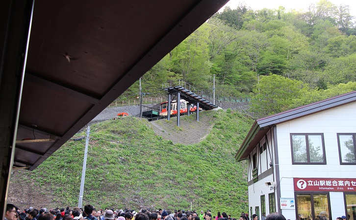
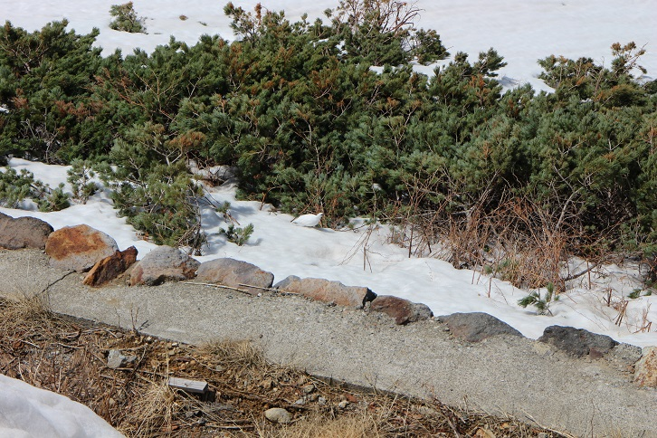

心が雪を求めていたので立山黒部アルペンルートに行ってきた(2018年05月19日)
今年の雪の大谷の高さがでました??
— 【公式】立山黒部アルペンルート (@tateyamagirl) 2018年4月15日
・・・ １７メートル！！！！！
今年の特徴としては、大谷入口付近から高さがあるとのこと。
最高地点の高さは昨年より劣るものの、迫力は増してるようですよ?
明日から一週間は太陽が見られそうな予報です。
雲上の青と白の絶景、見にこられ～♪ pic.twitter.com/zfhvODSgKg
ついった見てたらこれがRTで回ってきた...
すごいなー...
...
行くかー！！
はい、というわけで、行ってきました、コンちゃんこと佐々木です。
たくさんの写真を貼り付けつつ感想書くよ！！
_________________________________________
2018年4月28日(土)。
立山黒部アルペンルートは、富山と長野にまたがっています。
富山側、長野側のどちらからスタートしても良いですが、今回は富山スタート。
前日くらいに予約した、池袋発富山駅行きのバスに乗ります。
夜行は全部埋まっていたけど昼行はなぜか余裕で、なんだ昼は乗る人少ないのかー思ったけど、2号車だこれ！
しかも2号車半分くらいしか埋まっていない！
後ろもいない！
3列シート！
わーい！！
6時間の乗車ののち...
picこれが富山駅か！
写真ブレてんな！？
時刻は20時なのでご飯。
車内で何食べるか考えた結果、駅ビルの、刺身と氷見(ひみ)うどんのセットが食べられるお店に。
富山名物の氷見うどん、あと日本海に面しているので海鮮が良いとのことで。
あっ！
海鮮丼の上に、これまた富山名物の白えびが乗っているじゃないですか！！
嬉しい！
食べたら本日の宿泊地へ。
富山地方鉄道に乗ります。
大泉駅で降りて徒歩...10分？20分？で到着したのは...
picスパ・アルプス。
24時間運営の健康ランドみたいな。
ネットカフェも考えたんだけど、ネカフェのシャワーより良さそうだったので。
あと手ぶらで良いってところも。
ガウンも無料貸し出しなので、お風呂後はガウンでok。
値段は1800+900(深夜1時をまたぐ場合)=2700円で、ネカフェよりちょい高め。
ここでひとつ誤算がありまして。
仮眠室で寝るつもりが、仮眠室全部埋まってて、仕方なく休憩室のイスを倒して寝ることに。
スマホの目覚まし(振動のみ)を3時半にセットし、盗られないようにガウンのポケットにIN。
...目が覚めたら5時、寝坊しました（白目）
始発電車に乗るつもりだったのになー！！！
とりあえず至急電鉄富山駅に向かいます。
4.2kmあるので、徒歩50分くらい...。
ところでなんでこんなに朝早いかというと、人が少ないうちに写真撮りたい、というのもありますが...
もっとヤバい問題として、アルペンルートのチケットを予約していないので、当日券頼みなのです。
いつ売り切れるかさっぱり調べていないので、とにかく早くチケット売り場に行く必要があったのです。
繁忙期は電鉄富山駅でチケットを売っています。
写真は、無事にチケットを確保し改札待ちのときに撮影。
始発の次の電車でまだ朝6時だというのに、前に30人くらい並んでました。
ちなみにチケットは電鉄富山からアルペンルートの終着、扇沢ってところまでで、9500円くらい。
クレカが使えます！
チケット購入時に立山ケーブルカーの時間指定が必要で、「できるだけ早い接続で」ってお願いしたけど、最も早い接続は取れなかった。
やはり混んでいる...。
今回は1番線から。
富山地方鉄道では終点の立山まで乗って、そこからいろいろ乗ります。
行程は以下のとおり～。
(公式を見たほうが分かりやすい)
電鉄富山 ---(富山地鉄電車)--- 立山 ---(立山ケーブルカー)--- 美女平 ---(立山高原バス)--- 室堂 ---(立山トンネルトロリーバス)---
大観峰 ---(立山ロープウェイ)--- 黒部平 ---(黒部ケーブルカー)--- 黒部湖 ---(徒歩)--- 黒部ダム ---(関電トンネルトロリーバス)---
扇沢
立山までの電車内ではおにぎりとます寿司を食べつつ、隣に座ったおじさまと会話。
荷物量がすごかったので、登山ガチ勢かな。
田んぼに映る山がめっちゃ美しかったのでパシャっと。
電鉄富山から1時間ほど、朝7時に...
立山に着きました！
バスも近くに何台か止まっていたこともあってか、結構人いるな！

次はあれかな？

立山ケーブルカーです！
立ち位置的にこれくらいしか写真が撮れなかったんですが、坂がすごい。
よーこんなとこ登れんなー。
次は立山高原バスで美女平から室堂まで。
標高977mから2450mまでを50分かけて登ります。
このバス、まだ新しいっぽく、内装がきれいだし、なんと充電用USBポート付きでした。
ハイテクやんな？
すごい登ってきた。
ちょうど先発部隊が入場しているところで、室堂に到着です。
時刻は9時。
1
室堂の建物からの写真。
快晴だな！
久しぶりに雪の上を歩けるー。
気温5度の、高さ17m。
...ところで、標高の英語誤字ってますやん？
雪の壁すごくないですか？
こっちの写真の方がすごい感出てるね。
山々。
あれが剱岳...。
日本国内で一般登山者が登る山のうちでは危険度の最も高い山、らしいです。
レストラン立山
ここでお昼。
ホテルがあるのですが、そのホテルが運営しているっぽいレストラン。
カレー
とやまポークカツカレー。
お値段ちょいとするけど、今こそ奮発じゃーい！！
時間が少し余ったので、あの建物まで歩きます。
あのエメラルドグリーンは、湖かな？
みくりが池温泉にほぼ到着。
ちょいと休憩後、みなさん同じ方向にカメラを向けており、何だろな？
撮影してみました。
...拡大します。
これは...？
ライチョウか！？
数十万円しそうなカメラを向けてる方もいたし、たぶんライチョウ。

ライチョウ移動中。
動画も撮ったよ！
1158movie
そろそろ時間なので戻って...
次は「立山トンネルトロリーバス」。
12:15に乗るつもりで戻ってきたんだけど、12:00発が臨時で出るらしく、乗ります。
車内から撮影。
トンネルの中をバスが走るよ！
ところで、バスって名前付いてて見た目もバスっぽいけど、法律的には電車らしいですよ。
（ブレててごめん）
前方の青いライトの区間は工事最難関区間で、80mを7ヶ月かけて掘ったらしい。
ここだけライト色違うの、アトラクション感あって楽しいな！？
到着した大観峰は標高2316m、室堂より100mくらい低い。
次の乗り物の時間まで、展望台へ。
うおあーっ！
緑の湖は黒部湖かな？
位置変えてもう1枚。
さて、ここから立山ロープウェイで下ります。
これに乗って、
これを下ります。
柱が一本もない。
黒部平に到着～！
建物内はめっちゃ混んでて、あっあれ食べたい！というもの見つけても時間が心配でスルー。。。
次は...
黒部ケーブルカー。
日本唯一の全線地下式。
下った先、外に出ると...
すごい緑色の湖が出迎えてくれます。
反対側はこんな感じ。
そう、ここは...
かの有名な、黒部ダムです！！
ソフトクリーム食べながら散策。
サイダーも買った（よくばり）
息を切らして展望台っぽいところまで上って撮影。
人ちっちゃいな...。
山も一緒に撮りましたver.
景色も食べ物も満足したし、帰りのバスが出る扇沢まで向かいます。
扇沢に向かう関電トンネルトロリーバスのりば、めっちゃ混んでんな！？
青いライト区間。
上で書いた、80m7ヶ月って、こっちだったっけ...？
扇沢で到着。
道路脇や山肌には少し雪が残っています。
ここからバスタ新宿まで高速バスに乗車。
1日一本だけだし、めっちゃ混んでそう...って思いつつ乗ったら10人くらいでした。